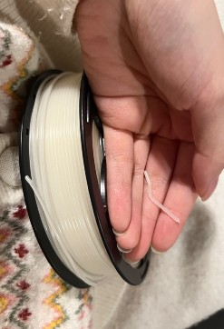
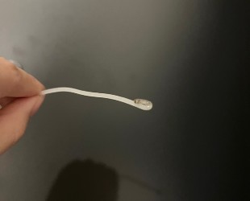

Experiment with original material chemically to simulate 3D printing.
3D printing: heat the PLA, formulate the surface and fill in the model.
How to simulate 3D printing process by hand.
Burn the material to bend it, which is easy to transform.

